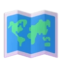
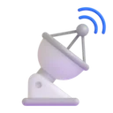
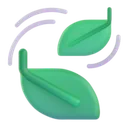
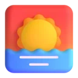
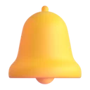
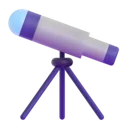

ویژگیهاFeatures
چیزی بیشتر از یک عدد روی صفحهMore than a number on a screen
هوا فقط دما نشان نمیدهد؛ میگوید چقدر مطمئن است، چرا، و چه کاری بهتر است انجام دهید.Hava doesn't just print a temperature. It tells you how sure it is, why, and what to do about it.

ده منبع، یک پاسخTen sources, one answer
مدلهای ECMWF، DWD و NOAA، MSN و Weather Underground، MET Norway و چند منبع دیگر کنار هم مینشینند؛ اگر نظرشان فرق کند، هوا همین را به شما میگوید.ECMWF, DWD, NOAA, MSN, Weather Underground, MET Norway and more sit side by side — and when they disagree, Hava tells you so.

سنجیده با ایستگاههای واقعیChecked against real stations
هر پیشبینی با ایستگاههای METAR و SYNOP نزدیک مقایسه میشود؛ منبعی که غلط بگوید کنار گذاشته میشود، نه اینکه در میانگین گم شود.Every forecast is compared with nearby METAR and SYNOP stations. A source that gets it wrong is set aside, not averaged in.
باران، دقیقهبهدقیقهRain, minute by minute
پیشبینی دقیقهبهدقیقهٔ بارش برای ساعتهای آینده، با اعلان اختیاری پیش از باران و برف.A minute-by-minute nowcast for the next couple of hours, with optional alerts before rain or snow.

هوا و آسمانAir & sky
شاخص کیفیت هوا، گرد و غبار، گرده، UV همراه با توصیهٔ زمان سوختگی، طلوع و غروب و فاز ماه.Air-quality index, dust, pollen, UV with burn-time advice, sunrise and sunset and the phase of the moon.
فارسی، از ریشهPersian at its core
راستبهچپ کامل، تقویم شمسی، ارقام فارسی و توضیحاتی که به فارسی نوشته شدهاند — نه ترجمهٔ ماشینی عددها.Full right-to-left layout, the Jalali calendar, Persian digits and insights written natively in Persian — not translated numbers.
شیشهٔ مایعLiquid glass
کارتهای شیشهای با لبهٔ شکستدهندهٔ نور، صحنههای عکسگونه برای ۱۲ حالت آبوهوا و ساعت روز، و ذرات ریز باران، برف و ستاره.Translucent glass cards with a refractive rim, photo scenes for 12 weather and time-of-day moods, and fine rain, snow and star particles.

ویجت صفحهٔ اصلیHome-screen widgets
سه اندازه، شش ظاهر، قابل تغییر اندازه، با پیشبینی ساعتی و روزانه و برچسب صادقانهٔ «داده قدیمی است».Three sizes, six looks, freely resizable, with hourly and daily forecasts and an honest “old data” flag.

بهروزرسانی مطمئن در پسزمینهReliable background updates
راهنمای گامبهگام برای مدیر باتری شیائومی، هوآوی، سامسونگ، اوپو و دیگران تا ویجت و اعلانها نخوابند.Step-by-step guides for the battery managers of Xiaomi, Huawei, Samsung, OPPO and more, so widgets and alerts don't fall asleep.

شفافیت کاملFull transparency
صفحهٔ «منابع» وضعیت، تأخیر، وزن و اختلاف هر منبع را نشان میدهد و میتوانید هر کدام را خاموش کنید.The Sources screen shows each provider's status, latency, weight and bias — and lets you switch any of them off.